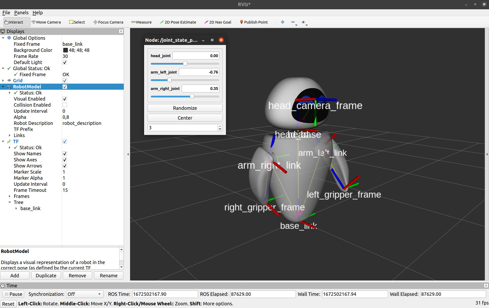

Represent your robot
I, robot
Represent your robot
Welcome to this first Overworld tutorial. As Overworld is a geometrical Situation Assessment component for Human-Robot Interaction, it is firstly centered around the robot itself. This is from the robot description that the robot will be able to perceive and thus reason about its world.
In robotics and especially with the use of ROS, a robot description is something really common and now quite standardized. We will thus avoid reinventing the wheel! We just have to make sure that everything is properly done from the robot side and then we will be able to create a first basic Overworld configuration
Setup a tutorial package
To facilitate the tutorials, we will first create a ROS package that we will use for all the following tutorials. Let's call it overworld_tutorials. For the moment we do not define any dependencies as it will just contain some configuration files, ontologies, and launch files.
We can quickly clean the package.xml and CMakeLists files with their minimal content as follow:
Perfect, now compile your workspace to reference the newly created package.
Unified Robot Description Format (URDF)
The Unified Robot Description Format (URDF) is the most popular code-independent and human-readable way to describe the geometry of robots and their cells. Overworld thus uses it to get the robot model and dynamic.
We will not write one by ourselves as such files are usually provided. For this tutorial, we will play with Eve (from the Walle movie) which is really simple.
We will just publish the robot state and the joint state through ROS. To do so, let's create a launch folder in our package and in there create an eve_publisher.launch file with the following content.
The robot_description parameter is a ROS parameter containing the robot URDF file content. Overworld will use this parameter to load the URDF in the same way Rviz does it.
The joint_state_publisher_gui will open a little gui with slide bars allowing us to move our robot joints.
Finally, the robot_state_publisher just publishes the robot state to tf (I'm sure you didn't guess it). It takes the joint angles of the robot as input and publishes the 3D poses of the robot links, using a kinematic tree model of the robot.
Before moving on, let's see what our robot looks like. To do so, launch our new launch file as well as rviz. In the latter, set the base_link frame as the fixed frame then add a RobotModel and a Tf visualizer. You should have something as below.
Playing with the sliders, you can move the robot's arms and head.
An important detail to be noticed, the robot has a camera frame whose forward axis is Z. For the moment, Overworld always assumes that the robot camera is built in such a way. This is important as Overworld uses this information to determine the robot's field of view.